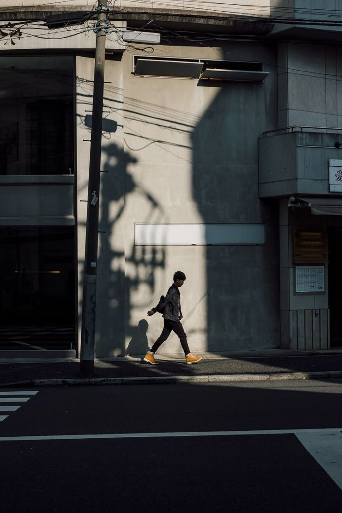
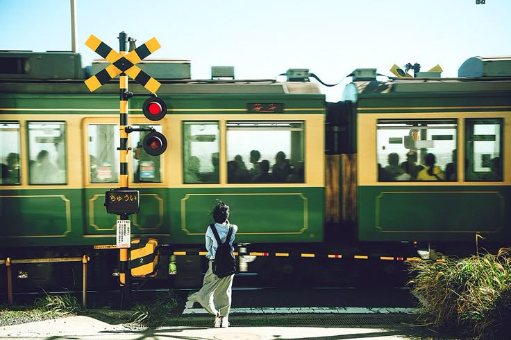
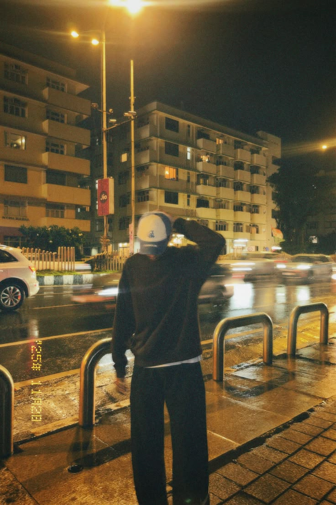
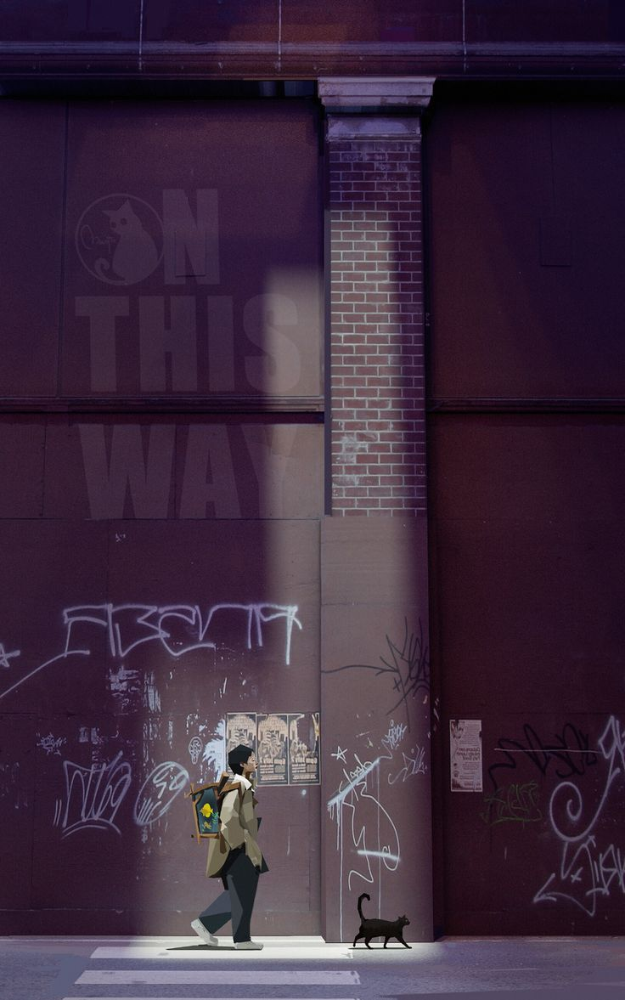
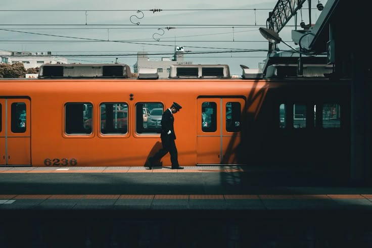

Lyanan Kami
Photography & Vidiography
Kami menyediakan layanan foto dan video profesional untuk berbagai kebutuhan, mulai dari personal hingga bisnis. Dengan tim yang berpengalaman dan peralatan berkualitas, kami siap membantu mengabadikan setiap momen penting dengan hasil yang menarik dan berkesan. Kami juga mengutamakan kreativitas serta detail agar setiap karya memiliki nilai visual yang profesional dan elegan.

Photography
foto berkualitas tinggi untuk setiap momen berharga anda
Vidiography
foto berkualitas tinggi untuk setiap momen berharga anda

Editing
foto berkualitas tinggi untuk setiap momen berharga anda
Tentang Kami
Mengabadikan Momen Menciptakan kenangan
Kami adalah tim kreatif yang passionate dalam dunia visual. Dengan pengalaman dan peralatan profesional, kami siap untuk membantu Anda mengabadikan momen terbaik menjadi kenangan yang tak terlupakan. Kami selalu mengutamakan kualitas, kreativitas, dan detail dalam setiap hasil foto maupun video agar memberikan kesan yang lebih berharga dan profesional.
| Jenis Layanan | Estimasi Harga (Sesi Standard) | Estimasi Harga (Sesi Premium) |
|---|---|---|
| Foto Prewedding | Rp 1.500.00jt - 3.000.000 | Rp 4.500.000jt - 8.000.000 |
| Foto Wedding | Rp 3.000.000 - Rp 6.000.000 | Rp 7.500.000 - Rp 15.000.000 |
| Foto Wisuda | Rp 500.000 - Rp 1.200.000 | Rp 1.500.000 - Rp 3.000.000 |
| Foto Produk | Rp 50.000 - Rp 100.000 | Rp 1.000.000 - Rp 3.000.000 |
| Video Cinematic | Rp 2.000.000 - Rp 4.000.000 | Rp 5.000.000 - Rp 10.000.000 |
| Live Streaming | Rp 1.500.000 - Rp 3.000.000 | Rp 4.000.000 - Rp 8.000.000 |
| Desain Grafis | Rp 150.000 - Rp 500.000 | Rp 750.000 - Rp 2.000.000 |
| Editing Video | Rp 300.000 - Rp 800.000 | Rp 1.000.000 - Rp 3.000.000 |
150+
Project Selesai
130+
Client Puas
4 Tahun
Pengalaman
Stories Through Lens




Teknik Pengambilan
Photography & Vidiography
Kami menggunakan teknik pengambilan gambar profesional untuk menghasilkan foto dan video yang tajam, estetik, dan penuh emosi. Setiap momen diambil dengan pencahayaan dan sudut terbaik agar hasil terlihat lebih hidup dan berkesan. Proses pengambilan dilakukan dengan peralatan modern serta editing berkualitas untuk menciptakan visual yang menarik dan profesional. selengkapnya
Kenapa Harus Layanan Kami?
Hadirkan Citra Berkelas Lewat Kualitas Visual Tanpa Kompromi
Di era digital, visual yang berkualitas adalah kunci utama untuk menarik perhatian. Layanan Photography & Videography kami dirancang untuk memberikan standar tertinggi bagi kebutuhan visual Anda atau bisnis Anda. Kami menggunakan teknik pengambilan gambar profesional yang didukung oleh peralatan modern terkini untuk menghasilkan visual yang tajam, estetik, dan berkarakter. Mulai dari pengaturan pencahayaan yang matang, pemilihan sudut terbaik, hingga sentuhan akhir melalui proses editing berkualitas tinggi, kami berkomitmen menciptakan hasil foto dan video profesional yang mampu meningkatkan nilai dan daya tarik instan pada setiap karya.